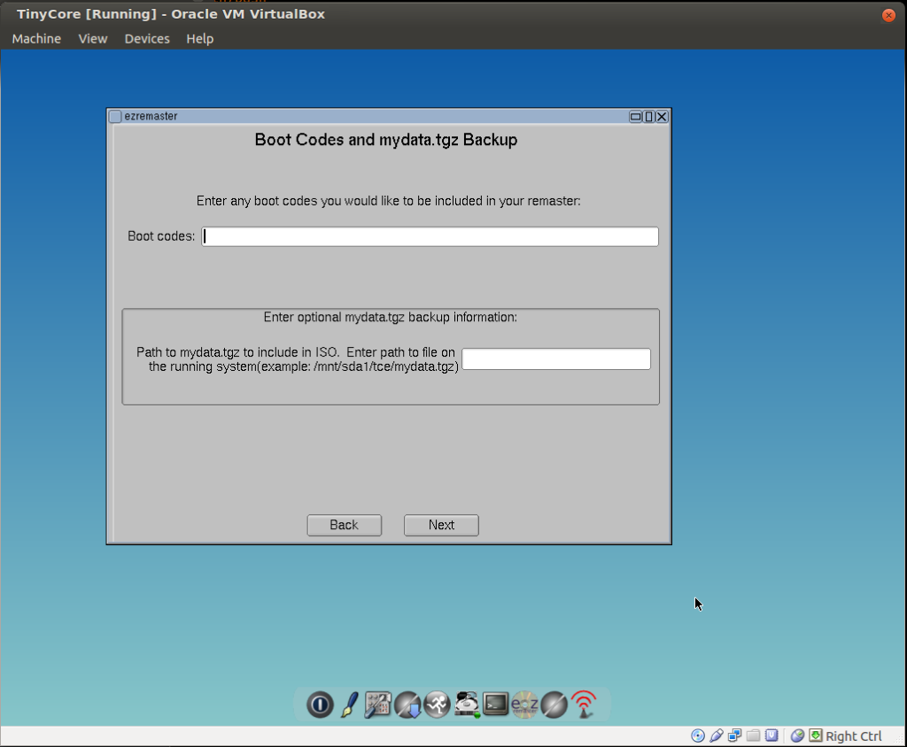
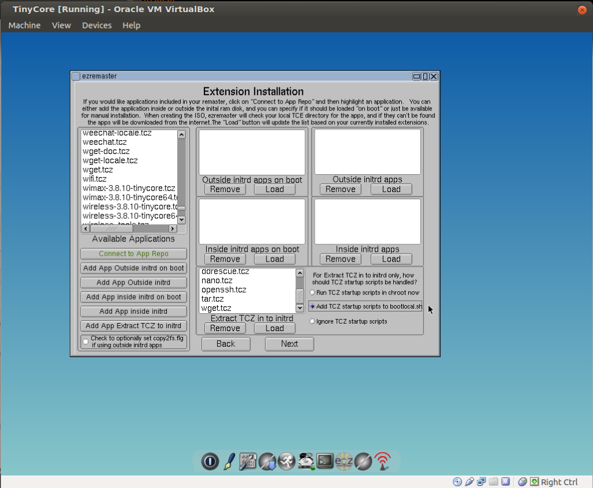
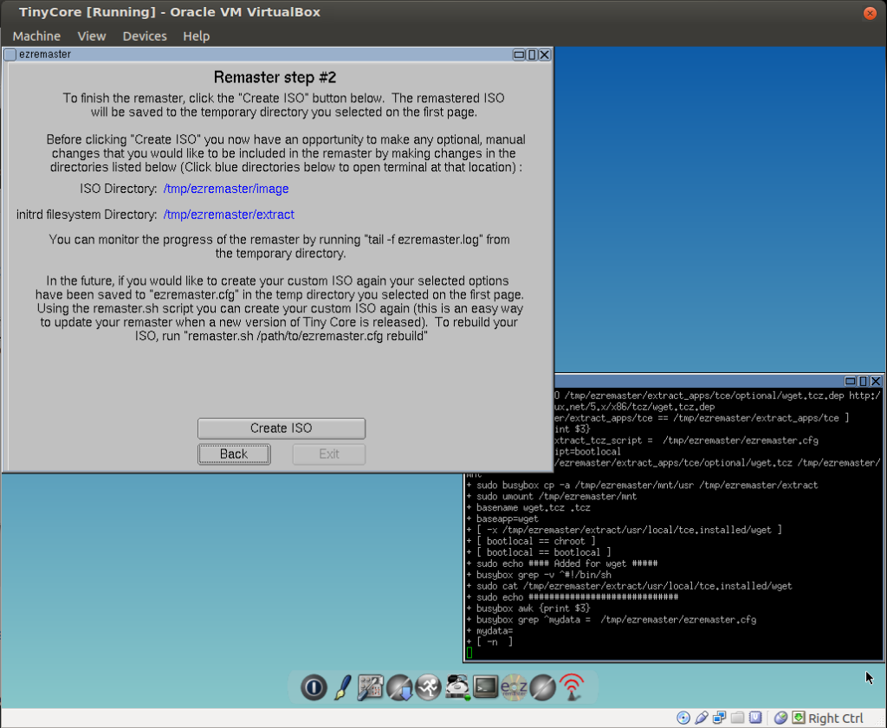
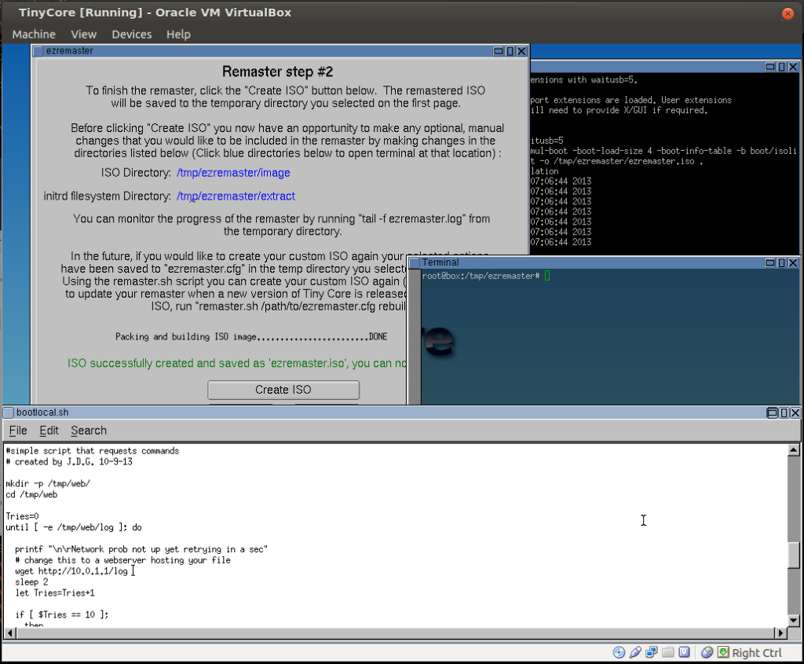
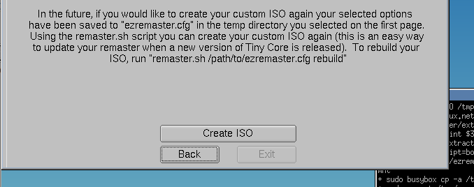

|| Raspberry Pi PXE Server, Author: xor-function || 07/29/2014 || Back to main
At first I wanted to use the rpi as a typical imaging server to perform backups. Unfortunately my
rpi alone could not do this due to the low amount of space on the sd card, I guess I should of
got a 16gb card instead. For the tftp server hosting our OS to be loaded over PXE, we will again
use Dnsmasq since it's concise configuration makes trouble shooting easier if a problem presents itself.
You will probably have problems with the Ethernet interface of the PI crashing randomly during the
PXE boot process with the current Raspian image as of 1/21/14, this seems due to the kernel version
it uses. The distribution I used to create the following was PwnPi which is working successfully for me.
I created a bash script that will setup a raspberry pi or any device with Debian based OS that has the
necessary network ports and packages to boot Plop over pxe, it's available on github.
https://github.com/xor-function/plop-pxe-server
use git to grab a copy.
git clone https://github.com/xor-function/plop-pxe-server.git
There is only two configuration files that need to be modified.
/etc/network/interfaces
/etc/dnsmasq.conf
for /etc/network/interfaces
auto eth0
iface eth0 inet static
address 10.0.2.1
netmask 255.255.255.0
network 10.0.2.0
broadcast 10.0.2.255
I set a static address to create reliable and known address for the server to have.
For /etc/dnsmasq.conf
enable-tftp
tftp-root=/tftpboot
dhcp-boot=pxelinux.0
interface=eth0
dhcp-range=eth0,10.0.2.100,10.0.2.120,255.255.255.0,12h
log-queries
log-facility=/var/log/dnsmasq.log
server=208.67.222.222
no-resolv
These settings created the pxe-server which is going serve files from the tftp-root.
And it also created the dhcp server which will use the specified dhcp range.
if /tftpboot folder does not exist create it
mkdir /tftpboot
Now install syslinux which will provide a collection of boot loaders.
aptitude install syslinux
now copy three files from /usr/lib/syslinux/
memdisk
menu.c32
pxelinux.0
To the /tftpboot folder using the cp command
cd /usr/lib/syslinux/
cp memdisk menu.c32 pxelinux.0 /tftpboot
now create two folders inside /tftpboot
mkdir /tftpboot/pxelinux.cfg
mkdir /tftpboot/tcl
With this setup I will NOT be using a menu although it is your choice but that is
outside of the scope of this post. The default file will immediately
run a default kernel without delay.
Create a file name default
touch /tftpboot/pxelinux.cfg/default
now use an editor (nano, pico) to add the following configuration
DEFAULT tcl
PROMPT 0
LABEL tcl
KERNEL tcl/vmlinuz
APPEND initrd=tcl/core.gz
You now might of notice that we need two more files inside the tcl folder core.gz and vmlinuz,
unfortunately these files can't be downloaded from some were they must be created.
CREATING THE FILES
As I stated earlier I was low on space plus the raspberry pi is low on resources only 512MB
for ram, which why I did this. This way there is space for net booting a Linux kernel and
its initrd since there total size was around 12MB. I chose Tiny Core Linux for this purpose
and used Tiny Core Plus as the development environment since a remastering tool is provided
along with the live CD, called ezremaster.
Ignore this part of the menu.

I used virtual box to boot up the live CD since I can just save the machine state and perform
rapid tweaks if need be. I will not cover in this post how to do this on virtual box you can
find some guides on there official site or you can try here.
Make sure the virtual machine is connected to the Internet as the remastering tool pulls from
repositories for new packages. Use ezremaster to select any bin that you fell is needed then
import it into the field which will extract the apps into the initrd. This is important
as you will see in a bit
Applications I downloaded and imported with "Exract TCZ in to initrd" option:
ddrescue
openssl
ssh
bash
wget

Imported apps into initrd
Also make sure to activate the option to add the startup scripts to bootlocal.sh
After selecting next you will eventually see a prompt that asks if you want to perform
any manual changes to the file system. These are extracted to the /tmp folder the precise
location for the initrd file-system is /tmp/ezremaster/extract/

This is were I made some more changes. I pasted one of the scripts I created into the
/opt/bootlocal.sh which is the boot script that runs after the initial ram disk is extracted.

The purpose for this script is to put the pxe loaded OS into a state that is requests for
commands from a specified server. This makes is easier to tweak scripts on the fly since
the script with more detailed commands reside on the specified server.
Also specifying a domain name would allow dynamic ip's to be used by the server hosting
additional scripts, but for this post I will be sticking to IP address.
Open up the terminal sudo su to become root run this command
editor &
Then with the editor open the .sh script in the following location
/tmp/ezremaseter/extract/opt/bootlocal.sh
append the following to the very bottom of the script.
----------------------------------------------------------------------------------------
# simple script that uses wget to grab a file then run it.
mkdir -p /tmp/web/
cd /tmp/web
Tries=0
until [ -e /tmp/web/log ]; do
echo "[*] Network is prob not up yet retrying in a sec"
# change this to a web-server hosting your file
wget http://192.168.1.1/log
sleep 1
let Tries=Tries+1
if [ $Tries == 10 ]; then
clear
echo
echo
echo "[!] No dice on wget"
sleep 5
break
fi
done
wait
mv log log.enc
# change the pass argument to a different pass-phrase or use a key
openssl aes-256-cbc -d -a -in log.enc -out rcmds.sh -pass pass:socksroxx 2>/dev/null
wait
chmod +x rcmds.sh
/bin/sh /tmp/web/rcmds.sh
clear
echo
echo "Somethings dead"
echo "its prob one of these; the nic, the web-server or the script it's hosting"
echo "shutting down"
sleep 10
poweroff && exit
----------------------------------------------------------------------------------------
You can see that this script that creates some interesting options.
The log file really isn’t a log file and it is also encrypted with aes 256 bit.
This is to prevent just anyone browsing to port 80 and downloading the file to
view it since it may contain commands involving user names , passwords or keys.
I encrypted it with openssl hence the reason I added it to the initrd.
Once the file is downloaded, it is renamed then decrypted and executed.
This makes it easier to modify the actions of what tiny-core does, without
having to constantly re-master it.
Now when your done select "Create ISO"

this should create an file called ezremaster.iso
copy this to a usb after mounting it with the mount tool
To do this, in the terminal (your usb may have a different folder name from sda1)
cd /mnt/sda1/
cp /tmp/ezremaster/ezremaser.iso .
(That period is not a typo)
Now unmount the usb
cd ~
umount /mnt/sda1
Now after sshing to your raspberry pi your going to have to mount
the ISO from the usb in order to extract the needed files.
mount -o loop -t iso9660 /media/your-usb-name/ezremaster.iso /mnt
cd /mnt/boot
cp vmlinuz core.gz /tftpboot/tcl
Now all that's left is the apache server and the script it's going to server.
If you don't have Apache install it.
aptitude install apache2
update-rc.d apache2 defaults
Now create the shell script you desire to use for testing then prep it
for retrieval by the OS your pxe-server pushes out.
Make log.sh and have it do whatever you want it to do.
Change the pass argument to something different and make sure it matches the pass in bootlocal.sh
openssl aes-256-cbc -a -salt -in log.sh -out log.enc -pass pass:socksroxx
mv log.enc log
mv log /var/www/
/etc/init.d/apache2 start
OVERVIEW
The kernel & initrd pushed out by the pi serve only the purpose of gaining BIOS level
control of the computer and then the modified bootlocal.sh script in the initrd put the
machine in a request for instruction state and if that request fails then it powers off.
This process, success or failure should complete within a minute or two. Although if
you provide commands that perform time consuming file operations like imaging will of
course take longer than a couple of minutes.
This also has the potential to be modified to work of a USB flash drive. The boot time
will probably be even faster and the bootlocal.sh can be modified to query with wget a
domain that's either an internal one or on the public internet.
Be creative